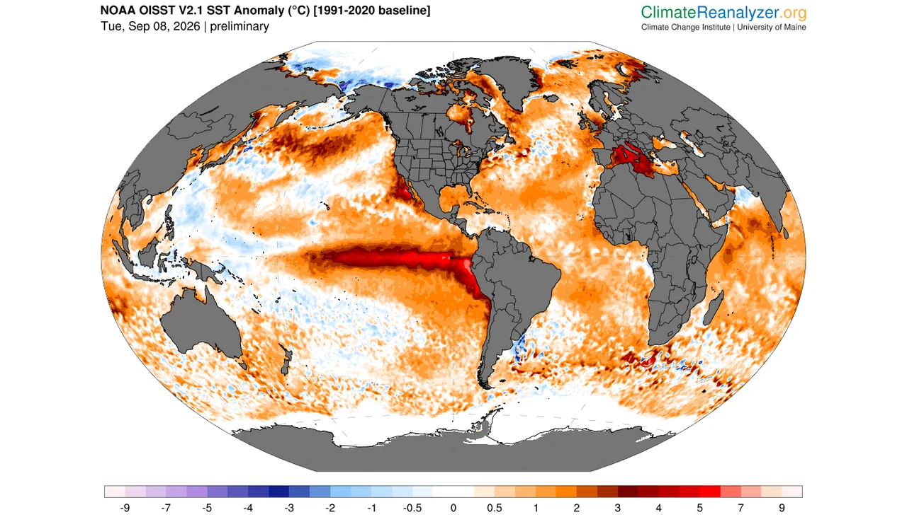
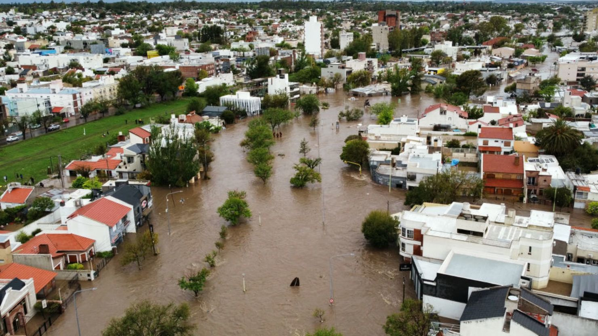
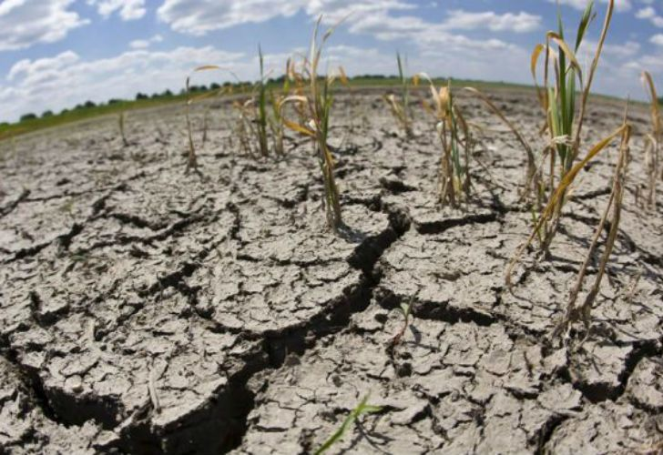
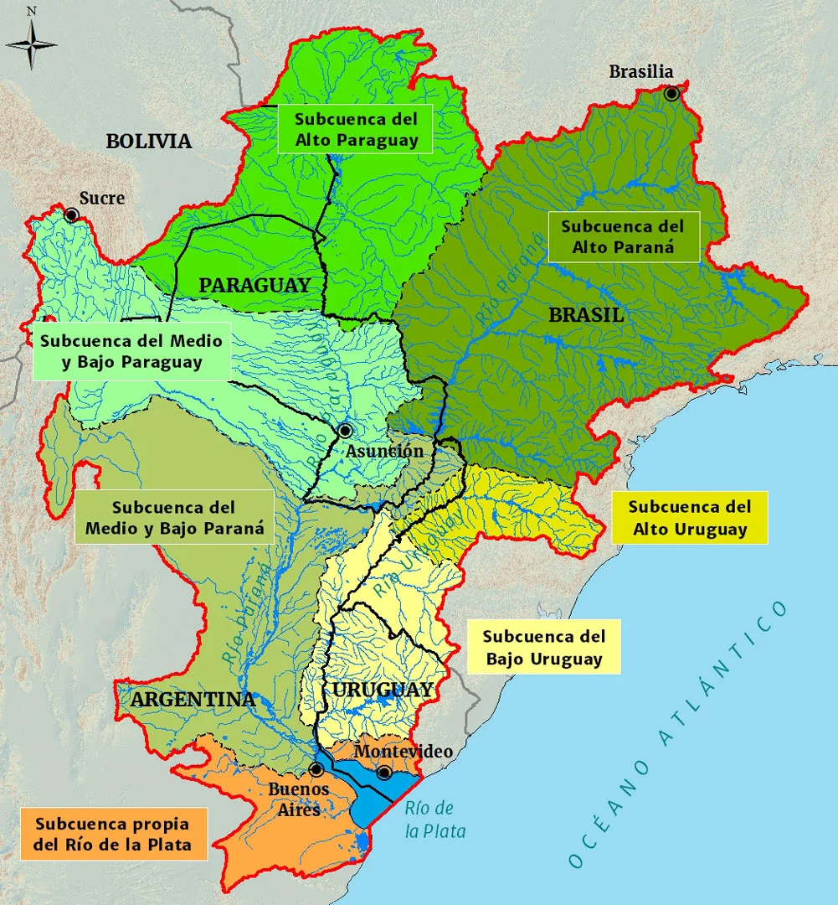
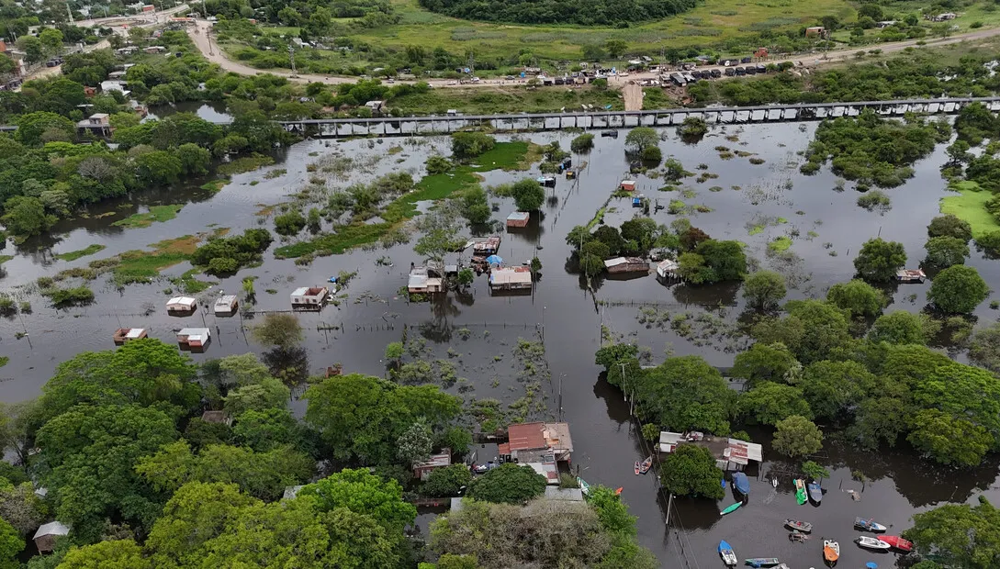
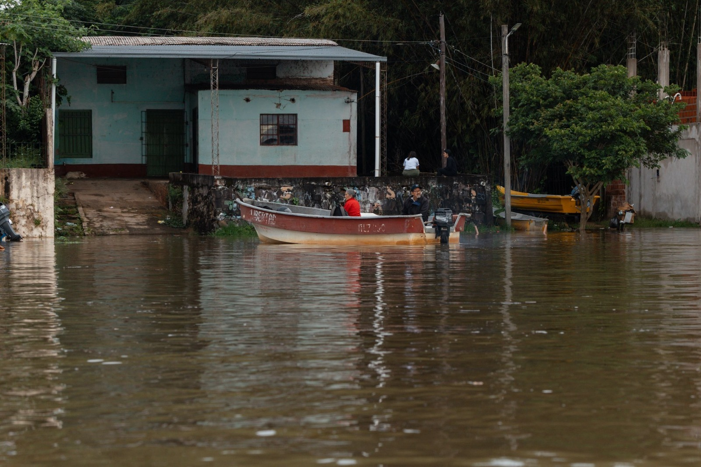
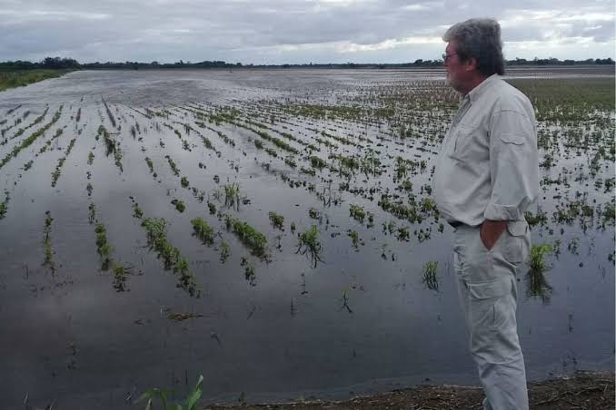

El Niño
Se caracteriza por temperaturas superficiales del mar más cálidas de lo habitual en sectores del Pacífico ecuatorial central y oriental, junto con cambios atmosféricos asociados.
GEOGRAFÍA · REGIÓN NEA · 2026
Del océano Pacífico a los paisajes de Chaco y Corrientes: entendé cómo un fenómeno climático puede sentirse a miles de kilómetros.
Explorar el fenómeno ↓ELEGÍ TU RECORRIDO
Entrá a cada tema con un botón. Podés volver al menú cuando quieras.
El Niño forma parte del fenómeno natural conocido como El Niño-Oscilación del Sur (ENOS). Sus cambios en el océano Pacífico tropical y en la atmósfera pueden modificar los patrones de lluvia en distintas regiones del planeta.
En el Nordeste argentino, sus efectos pueden relacionarse con lluvias abundantes, suelos saturados y variaciones en los niveles de los grandes ríos. Pero el impacto no es igual en todos los lugares: el relieve, los suelos y la infraestructura importan.
Una fase cálida de un sistema climático que conecta el océano y la atmósfera.
Se caracteriza por temperaturas superficiales del mar más cálidas de lo habitual en sectores del Pacífico ecuatorial central y oriental, junto con cambios atmosféricos asociados.
Es la fase fría del ENOS: las aguas superficiales del Pacífico ecuatorial central y oriental presentan temperaturas más bajas de lo habitual.
Se presenta cuando el sistema no reúne las condiciones características de El Niño ni de La Niña.
La clave está en el diálogo entre vientos, temperatura del mar y presión atmosférica.
Esquema conceptual simplificado. La evolución real del ENOS depende de la interacción de numerosos procesos oceánicos y atmosféricos.
Los organismos científicos combinan observaciones del océano y la atmósfera con modelos de pronóstico.
Resume la anomalía de temperatura superficial del mar en una región del Pacífico ecuatorial.
Es la diferencia entre la temperatura observada y un valor de referencia. Para identificar un episodio, los organismos consideran también la persistencia de las anomalías y las señales atmosféricas.
Una probabilidad no es una certeza. Expresa qué tan probable es cada escenario según la información y los modelos disponibles en la fecha de emisión.
Elegí una condición para comparar el comportamiento del Pacífico tropical.
En condiciones habituales, los vientos alisios empujan las aguas superficiales cálidas hacia el oeste. Cerca de Sudamérica ascienden aguas más frías desde las profundidades.
Esquema conceptual simplificado; no representa una escala geográfica ni valores medidos.
Los mapas de anomalías muestran cuánto se aparta la temperatura superficial del mar de un promedio de referencia. En esta imagen, la franja ecuatorial del Pacífico presenta sectores con anomalías cálidas.

Un cambio en el Pacífico tropical puede influir en patrones climáticos de regiones muy lejanas.
En algunas zonas del sur de Sudamérica, El Niño suele asociarse con una mayor probabilidad de precipitaciones por encima de lo normal.
En ciertas temporadas puede aumentar la probabilidad de condiciones más secas y de temperaturas elevadas.
El calentamiento del mar puede alterar ecosistemas marinos y afectar la disponibilidad de nutrientes para algunas especies.
Los efectos varían según la intensidad, la época del año y otros patrones atmosféricos. No son iguales en todos los eventos.


Dos provincias vecinas, con ambientes diferentes y conectadas por la cuenca del Plata.
Predomina una extensa llanura de pendiente muy suave. En sectores bajos, el agua puede escurrir lentamente y permanecer acumulada cuando las lluvias son abundantes.
Presenta lomadas, sectores de suelos arenosos y grandes humedales, entre ellos los Esteros del Iberá. Los ríos Paraná y Uruguay también condicionan áreas ribereñas.
El Paraná y el Paraguay forman parte de una extensa red hidrográfica compartida por varios países. El mapa permite ubicar las subcuencas que integran el sistema.




La amenaza puede ser regional, pero la vulnerabilidad depende de cada territorio y de sus condiciones sociales y materiales.
| Aspecto | Chaco | Corrientes |
|---|---|---|
| Relieve y drenaje | Llanura de pendiente muy suave; el agua puede acumularse en bajos. | Lomadas, planicies y humedales; el comportamiento del agua varía según el ambiente. |
| Producción | Posibles anegamientos de campos y dificultades para la ganadería y la agricultura. | Posibles afectaciones en actividades arroceras, ganaderas y zonas de esteros. |
| Infraestructura | Caminos rurales y accesos a parajes pueden verse comprometidos. | Áreas ribereñas y sectores urbanos costeros pueden sufrir crecidas. |
| Riesgos comunes | Afectación de viviendas e infraestructura, interrupciones de servicios y aumento de riesgos sanitarios tras lluvias e inundaciones. | |
La intensidad del impacto depende de la lluvia efectiva, el nivel de los ríos, el estado de los desagües, las defensas y la exposición de la población.
Los eventos anteriores ayudan a estudiar riesgos, pero cada episodio tiene características propias.
Uno de los episodios de El Niño más destacados del siglo XX, con importantes impactos en distintas regiones.
Fue ampliamente documentado por sus anomalías oceánicas y efectos climáticos a escala global.
Se registró un episodio intenso, seguido por impactos regionales que variaron según la época y el territorio.
Tres publicaciones de 2026 permiten comparar la mirada científica mundial con las consecuencias y el seguimiento hidrológico en el Litoral.
Síntesis: la OMM informó que las condiciones cálidas del Pacífico tropical favorecían el desarrollo de El Niño. En ese comunicado estimó una probabilidad del 80 % de que se instaurara un episodio entre junio y agosto de 2026 y destacó la importancia de prepararse ante posibles cambios en las temperaturas y precipitaciones.
Análisis: esta noticia muestra la escala global del fenómeno y el valor de los pronósticos para anticipar riesgos. La probabilidad citada corresponde al pronóstico publicado en junio, no debe interpretarse como una medición actual.
Para pensar: ¿por qué los organismos meteorológicos comunican probabilidades y no certezas absolutas?
Leer comunicado de la OMM ↗Síntesis: la nota describe inundaciones vinculadas con las precipitaciones y la crecida del Paraná. Informa que en Chaco más de 1.100 personas habían dejado sus hogares y que en Corrientes más de 550 habían sido evacuadas o se habían autoevacuado. También menciona la situación de Barranqueras y otras localidades ribereñas.
Análisis: permite relacionar el fenómeno climático con impactos concretos sobre la población, las actividades productivas y las localidades cercanas a los ríos. La nota también muestra la importancia de las lluvias registradas en las cuencas altas.
Para pensar: ¿qué grupos y actividades de nuestra región pueden resultar más vulnerables ante una crecida?
Leer noticia en Página/12 ↗Síntesis: la publicación presenta proyecciones del Instituto Nacional del Agua sobre posibles ascensos del Paraná y localidades de Corrientes, Chaco, Santa Fe y Entre Ríos que debían mantenerse bajo seguimiento durante octubre.
Análisis: aporta una mirada hidrológica y explica la diferencia entre niveles de alerta y evacuación. También aclara que una crecida no puede atribuirse exclusivamente a El Niño: intervienen las lluvias, los aportes de los afluentes y el agua que llega desde las cuencas superiores.
Para pensar: ¿por qué es importante distinguir una proyección de nivel de río de una evacuación que efectivamente ocurrió?
Leer noticia en Informe Digital ↗Las cifras y proyecciones de cada ficha corresponden a la fecha de publicación indicada. No representan necesariamente la situación actual.
La prevención reduce riesgos. Las recomendaciones deben seguir las alertas y orientaciones oficiales vigentes.
Los pronósticos estacionales no permiten anticipar con exactitud qué barrio o localidad se inundará. Para decisiones concretas, consultar alertas meteorológicas e hidrológicas oficiales.
Una cadena de relaciones ayuda a entender por qué un fenómeno del Pacífico puede influir en las lluvias de Sudamérica.
Relación general, no una predicción determinista: los impactos dependen de la estación, la intensidad del evento y otros factores climáticos e hidrológicos.
Respondé estas tres preguntas y comprobá tus conocimientos.
La información científica debe poder rastrearse hasta organismos y publicaciones confiables.
Sistema natural de interacción entre el océano y la atmósfera en el Pacífico tropical, que incluye las fases El Niño, La Niña y neutra.
Tocá otro botón para descubrir su significado.Fecha de consulta de fuentes y boletines: completar al momento de la entrega final. Créditos de imágenes: indicar autor, institución, fecha y licencia de cada recurso utilizado.